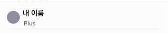
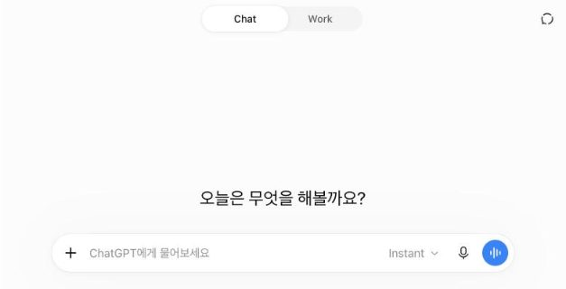
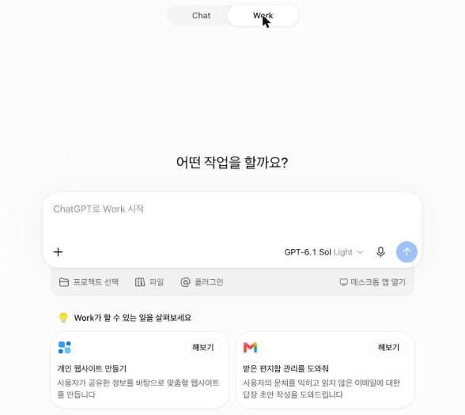
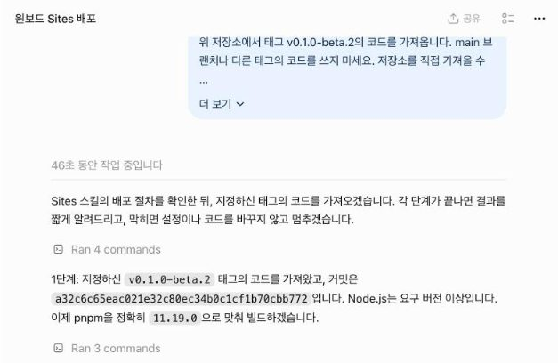
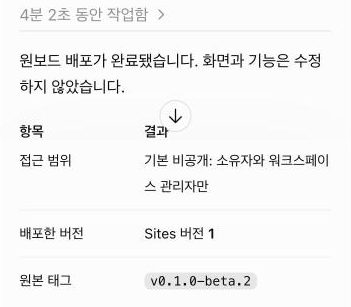
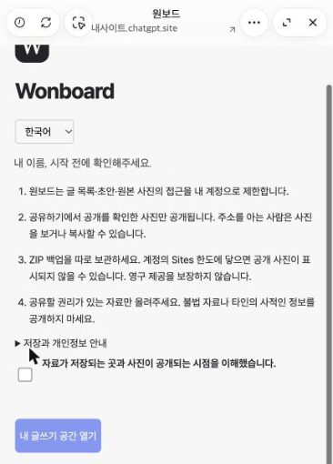
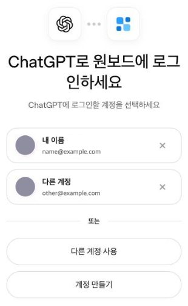
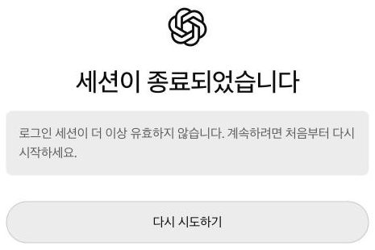
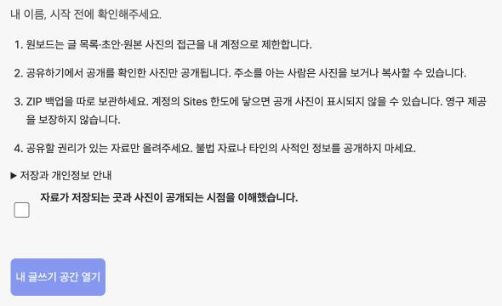
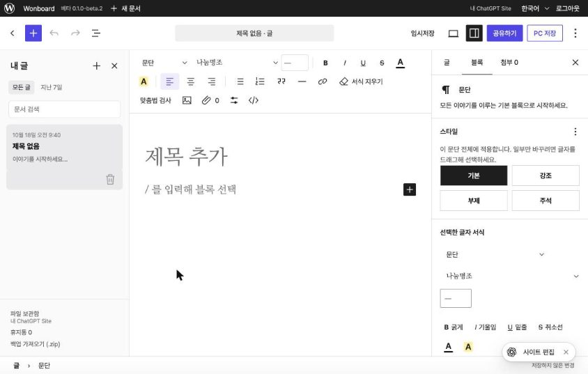

원보드 설치 마법사
단계마다 할 일 하나와 확인할 화면 하나를 보여 드립니다. 화면이 맞으면 「예」, 다르면 「아니요」를 눌러 그 경우의 해결 방법을 보세요. 이 페이지는 ChatGPT 화면을 볼 수 없어서, 확인은 직접 해 주셔야 합니다.
화면은 2026-10-18 ChatGPT 웹 기준입니다. 바뀌었을 수 있습니다. 설치 문장은 원보드 버전의 코드를 가져옵니다. 지금 단계는 이 브라우저에 기억되어, ChatGPT 탭에 다녀와도 같은 단계가 열립니다.
0단계. 요금제 확인하기
원보드는 ChatGPT 사이트(Sites)에 설치되고, Sites는 유료 요금제에서만 쓸 수 있습니다. ChatGPT(chatgpt.com) 왼쪽 아래의 계정 이름 밑에 지금 요금제가 보입니다.

요금제가 Plus·Pro·Business·Enterprise·Edu 중 하나인가요?
이런 경우에는
- Free·Go 요금제: 베타 동안에는 원보드를 쓸 방법이 없습니다. 원보드는 무료지만, 설치되는 자리인 Sites를 이 요금제에서 쓸 수 없습니다. 기다려 주셔서 고맙습니다.
- 요금제 표시가 없거나 로그인 화면이 나온다: 먼저 ChatGPT에 로그인하세요.
- 유럽경제지역(EEA)·스위스·영국: 출시 시점에 Sites 사용이나 공개 게시에 제한이 있었습니다. 다음 단계에서 Work가 보이는지로 확인하세요.
- 회사·학교 계정: 관리자가 Sites를 꺼 두었을 수 있습니다. 관리자에게 묻거나 개인 계정을 쓰세요.
1단계. ChatGPT를 Work 화면으로 열기
ChatGPT를 새 탭으로 열고, 화면 위쪽 가운데의 「Chat | Work」에서 Work를 누릅니다. 처음 열면 Chat이 골라져 있는데, Chat에는 Sites가 없어 설치가 시작되지 않습니다. 주소는 Chat과 Work 모두 chatgpt.com 그대로라서 이 버튼으로 Work를 바로 열 수는 없습니다.


입력창에 「ChatGPT로 Work 시작」이 보이나요?
이런 경우에는
- 로그인 화면이 나온다: 유료 요금제 계정으로 로그인한 뒤 위쪽에서 Work를 누르세요.
- 「Chat | Work」 전환이 없다: 로그인했는지, 0단계의 요금제인지 확인하세요. 회사·학교 계정이라면 관리자가 기능을 꺼 두었을 수 있습니다. 전환이 없는 경우는 아직 확인되지 않았습니다. 해결되지 않으면 아래 「막혔어요」로 알려 주세요.
- ChatGPT 데스크톱 앱을 쓰고 있다: 이 마법사는 웹(chatgpt.com) 기준입니다. 데스크톱 앱에서의 설치는 확인되지 않았으니 웹에서 하기를 권합니다.
2단계. 설치 문장 보내기
아래 버튼으로 설치 문장을 복사해, Work 화면의 입력창(「ChatGPT로 Work 시작」)에 붙여넣고 보냅니다. 문장을 고치지 않아도 되고, 모델은 기본값 그대로 두어도 됩니다.
설치 문장 보기

1분쯤 안에 「저장소 클론하기」나 「1단계: … 코드를 가져왔고」 같은 진행 보고가 보이나요?
이런 경우에는
- ChatGPT가 도구를 쓸 수 없다고 하거나, 코드 ZIP 파일을 첨부해 달라고 한다: Chat 화면에 보낸 것입니다. ZIP을 내려받지 마세요. 새 대화를 열고 위쪽에서 Work를 고른 뒤 설치 문장을 다시 붙여넣으세요(1단계).
- Work 화면인데 일반 대답만 하고 작업을 시작하지 않는다: 입력창에서
@Sites를 직접 골라 넣은 뒤 설치 문장을 다시 보내세요. - 복사가 되지 않는다: 「설치 문장 보기」를 펼쳐 글 전체를 직접 선택해 복사하세요.
3단계. 배포가 끝날 때까지 기다리기
여기서는 ChatGPT가 일합니다. 대화 창을 닫지 말고 기다리세요. 진행 보고는 이 순서로 나옵니다.
- 1단계: 코드 가져오기
- 2단계: 빌드
- 3단계: 사이트 생성과 배포 준비
- 4단계: 버전 저장과 배포
2026-10-18 시험에서는 승인 요청 없이 4분쯤 걸렸습니다.

ChatGPT가 배포가 완료됐다고 말하고 사이트 주소가 담긴 요약 표를 보여 줬나요?
이런 경우에는
- 승인해 달라고 묻는다: 내용을 읽고 승인하세요. 처음 설치이므로 새 사이트를 만들겠다는 것은 정상입니다.
- 오류로 멈췄다: ChatGPT가 알려 준 오류를 그대로 복사해 아래 「막혔어요」로 보내 주세요.
- ChatGPT가 오류를 피하려고 코드나 설정을 고치려 한다: 「고치지 말고 실패한 명령과 오류를 알려 주세요」라고 답하세요.
- 10분이 넘도록 진행 보고가 바뀌지 않는다: ChatGPT에 지금 어느 단계인지 물어보세요.
- 요금제 한도에 닿았다고 한다: 원보드가 풀 수 없는 제한입니다. ChatGPT가 보여 주는 한도 안내를 따르세요.
4단계. 내 사이트 확인하기
배포가 끝나면 ChatGPT 오른쪽에 사이트 미리보기 창이 열리고, 원보드가 내 이름과 함께 안내를 보여 줍니다. 이 화면이 보이면 내 계정이 이미 원보드의 소유자로 기록된 것입니다. 사이트 주소는 이 단계를 마칠 때까지 다른 사람에게 알리지 마세요.

미리보기 창에 내 이름과 함께 “시작 전에 확인해주세요.”가 보이나요?
이런 경우에는
-
미리보기 창이 없거나 닫았다: 요약 표의 사이트 주소를 새 탭에서 엽니다.
- 원보드보다 먼저 Sites의 「접속하려면 로그인하세요」 화면이 나옵니다. 「ChatGPT로 계속」을 누릅니다.
- 「ChatGPT로 원보드에 로그인하세요」 화면에 이 브라우저의 ChatGPT 계정이 모두 나옵니다. 사이트를 만든 계정을 이름과 이메일로 확인해 고르세요. 목록의 순서는 열 때마다 바뀔 수 있습니다.
- 원보드의 “시작 전에 확인해주세요.” 화면이 나오면 「예」를 누르세요.
새 탭에서 먼저 나오는 Sites 화면 
계정 선택. 계정 이름과 이메일은 예시로 바꿨습니다. -
「세션이 종료되었습니다」가 나온다: 계정 선택 화면을 오래 열어 두면 나옵니다(시험에서는 50분쯤). 사이트 주소를 다시 열어 처음부터 하세요.

- “다른 계정의 글쓰기 공간입니다.”가 나온다: 다른 계정이 먼저 소유자가 됐거나 다른 계정으로 로그인한 것입니다. 사이트를 만든 계정으로 다시 로그인해 보고, 그래도 같으면 설치 안내의 소유자를 직접 정하거나 바로잡기를 따르세요.
- “계정을 확인하지 못했어요.”가 나오고 다시 해도 같다: 지금 방식으로는 설치를 끝낼 수 없습니다. 아래 「막혔어요」로 꼭 알려 주세요.
- “이 사이트에는 아직 소유자가 없어요.”가 나온다: “ChatGPT로 로그인”을 눌러 사이트를 만든 계정으로 로그인하세요. 2026-10-18 시험에서는 이 화면을 보지 못했습니다(확인되지 않음).
5단계. 안내 읽고 시작하기
원보드의 안내 네 줄을 읽고 “자료가 저장되는 곳과 사진이 공개되는 시점을 이해했습니다.”에 표시한 뒤 “내 글쓰기 공간 열기”를 누릅니다. 미리보기 창이 좁으면 사이트를 새 탭에서 열어도 됩니다.


글 편집기와 “내 글” 목록이 보이나요?
이런 경우에는
- “내 글쓰기 공간 열기”가 눌리지 않는다: 확인란에 표시했는지 보세요. 표시해야 버튼이 켜집니다.
- 그 밖의 화면이나 오류가 나온다: 화면에 나온 안내를 적어 아래 「막혔어요」로 알려 주세요.
설치가 끝났습니다
처음 열면 빈 “제목 없음” 글 하나가 만들어져 있습니다. 바로 쓰기 시작하면 됩니다. 앞으로 챙길 것 세 가지입니다.
- 사이트 주소를 즐겨찾기에 넣으세요. 다음부터는 그 주소로 엽니다.
- 중요한 글은 “PC 저장”으로 백업(.zip)을 받으세요. 백업은 지금 연 글 하나와 그 글의 사진을 담습니다. Sites는 베타입니다.
- 사이트 접근 범위는 넓히지 않아도 됩니다. 게시판에 붙인 사진을 남에게 보이려면 그때 설치 안내의 설치한 뒤를 보세요.
오른쪽 아래에 떠 있는 「사이트 편집」 버튼은 Sites가 넣은 것이고 원보드를 쓰는 데는 필요 없습니다.
각 단계를 더 자세히 설명한 글은 단계별 설치 안내(자세한 설명)에 있습니다. 이미 설치했다면 새 버전으로 올리기를 보세요.
다른 사람의 계정에서는 아직 확인되지 않음. 이 마법사는 2026-10-18에 만든 사람의 Plus 계정으로 ChatGPT 웹의 Work 화면에서 끝까지 설치한 기록으로 만들었습니다. 다른 계정에서 막히면 그 단계의 「막혔어요」로 알려 주세요. 그 내용으로 마법사를 고칩니다.